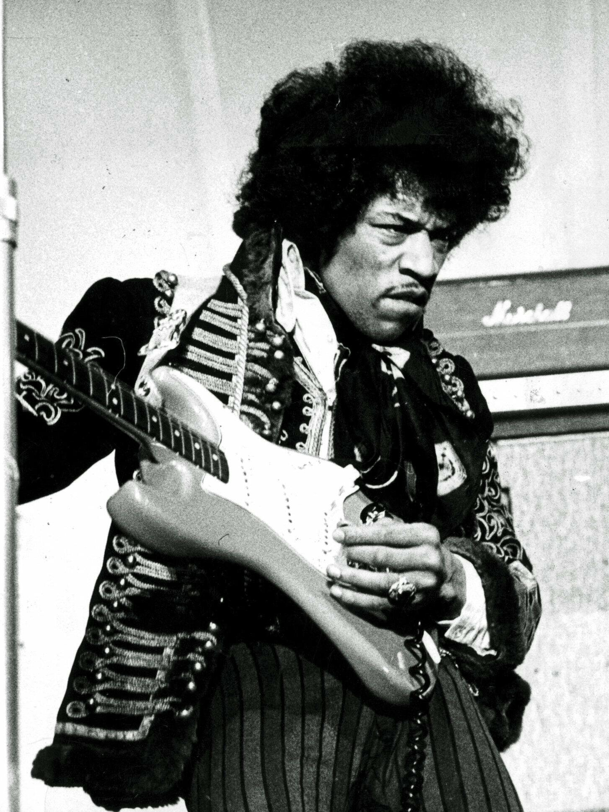

Jimi Hendrix – Majstor električne gitare
Biografija
Jimi Hendrix rođen je 27. novembra 1942. godine u Seattleu, Washington. Smatran je jednim od najuticajnijih gitarista u istoriji muzike, poznat po svom eksperimentalnom pristupu električnoj gitari, jedinstvenom zvuku i neponovljivim nastupima uživo.
Svoju karijeru započeo je kao prateći muzičar mnogim izvođačima, ali je pravi proboj doživeo kada je formirao The Jimi Hendrix Experience. Njihov debi album „Are You Experienced“ (1967) doneo je himne psihodeličnog roka kao što su „Purple Haze“, „Hey Joe“ i „The Wind Cries Mary“.
Hendrix je redefinisao ulogu gitare u rok muzici. Njegovi nastupi na festivalima Woodstock i Monterey Pop ušli su u legendu – naročito izvođenje američke himne, kao simbol protesta i slobode. Koristio je tehniku feedbacka, wah-wah pedale i distorzije da bi stvorio potpuno novi zvučni pejzaž.
Iako je njegova karijera trajala samo četiri godine, ostavio je neizbrisiv trag u muzičkom svetu. Preminuo je 18. septembra 1970. godine u Londonu, u 27. godini života, ali njegovo delo živi kao neprolazna inspiracija muzičarima širom sveta.
Najpoznatiji albumi
- Are You Experienced (1967) – Debi album sa pesmama: „Purple Haze“, „Foxey Lady“, „Hey Joe“.
- Axis: Bold as Love (1967) – Zreliji zvuk i melodije poput „Little Wing“, „Castles Made of Sand“.
- Electric Ladyland (1968) – Eksperimentalni dvostruki album sa pesmom „All Along the Watchtower“.
- Band of Gypsys (1970) – Živi album koji prikazuje njegov funk i soul uticaj.
Nasleđe
Jimi Hendrix je otvorio vrata novoj dimenziji muzičkog izražavanja. Njegova inovativnost inspirisala je generacije gitarista – od Erica Claptona do Lennyja Kravitza. Smatra se pretečom heavy metala, psihodelije, fanka i mnogih drugih pravaca.
Njegova umetnost prevazilazila je tehniku – bila je izraz duha vremena, buntovništva i umetničke slobode. Bio je pionir koji je rušio barijere između žanrova, rasa i kulturnih normi.
Jimi Hendrix je ostao simbol autentičnosti, kreativne hrabrosti i večnog traganja za novim zvukom. Njegov uticaj se oseća i danas, i zauvek će biti prisutan u svakoj noti rokenrola.